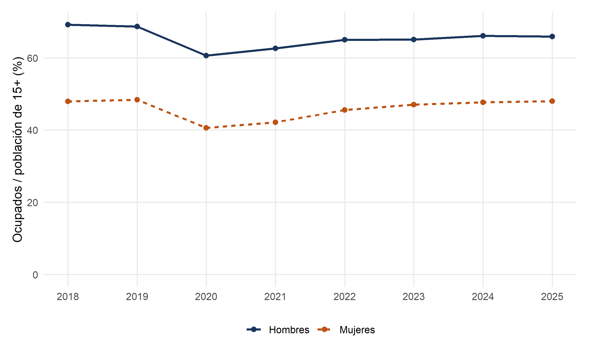

Código
lineas(filter(d,sexo!='Total'),'ocupacion_pct','sexo','Ocupados / población de 15+ (%)')
INE · Encuesta Nacional de Empleo · Estimaciones anuales, 2018–2025
¿Cómo evolucionaron la ocupación y la desocupación antes del incentivo al empleo formal anunciado en abril de 2026? Fuente del anuncio.
En 2025, la tasa de desocupación anual fue 8,6% y la tasa de ocupación 56,8%. Miden fenómenos distintos y usan denominadores diferentes.
Las series muestran diferencias por sexo y variaciones del mercado laboral. No identifican cuántos puestos generaría un incentivo ni cuántas contrataciones ocurrirían de todas formas.
Para evaluar el incentivo: se necesitan elegibilidad, remuneraciones, formalidad, duración de los empleos y una comparación que permita distinguir creación adicional de puestos y sustitución de trabajadores.
CSV 2010–2025 · Procesamiento R · INE: ocupación y desocupación.